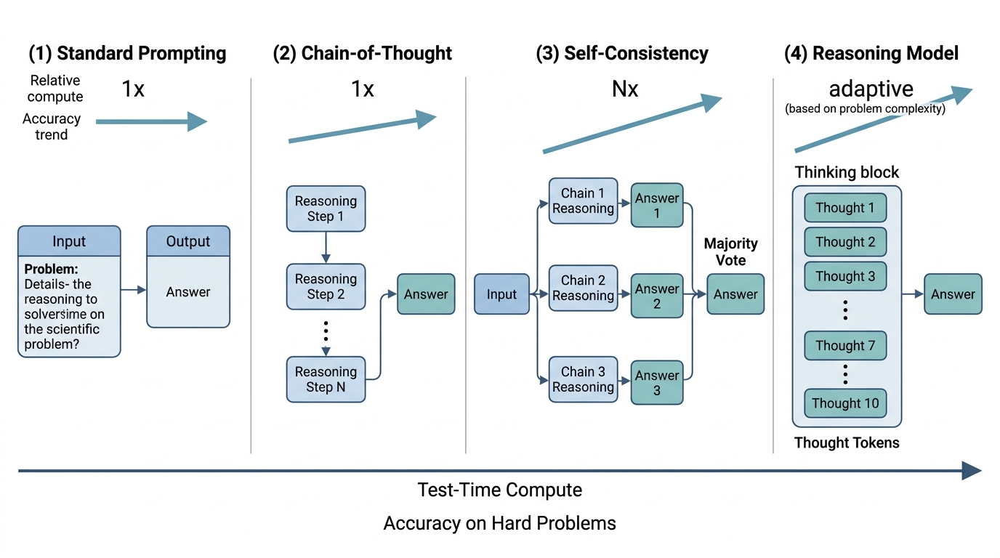

"I was asked to solve a differential equation. I could have answered in one token, but instead I wrote a 2,000-token internal monologue. My therapist says this is progress."
A Chain-of-Thought That Became a Chain-of-Consciousness
For the first five decades of AI, making systems smarter meant making them bigger: more parameters, more training data, more GPU hours. Chain-of-thought prompting introduced a complementary scaling axis: making systems smarter by letting them think longer at inference time. This insight, that a model can trade compute for accuracy at the moment it needs to answer, rather than during training, underlies the entire family of reasoning models (o1, o3, Claude's extended thinking, Gemini Deep Think). For scientific discovery, where problems are novel and training data is sparse, test-time compute scaling is transformative: the model can reason through a new derivation rather than recalling a memorized pattern.
1. The Chain-of-Thought Revolution
When a language model answers a complex scientific question in a single pass, it often produces a confident number that is quietly, catastrophically wrong. A single misapplied formula or a skipped unit conversion can invalidate an entire analysis, and the model gives no trace of where the error entered. The technique that changed this failure mode arrived in 2022.
What happens when you ask a language model to show its work before answering? In 2022, Wei et al. found out: accuracy on arithmetic, commonsense, and symbolic reasoning tasks jumped by 20 to 60 percentage points. The technique, called chain-of-thought (CoT) prompting, works by forcing the model to decompose a complex problem into smaller subproblems that each fall within its reliable capability range.
Chain-of-thought prompting instructs a large language model to produce explicit intermediate reasoning steps (equations, sub-conclusions, checks) before stating its final answer. It matters because LLMs are autoregressive, where autoregressive means each token is generated one at a time, conditioned on all tokens produced so far. Without written intermediate steps, the model must compress multi-step logic into a single forward pass, which frequently fails on problems requiring more than two reasoning hops. The core mechanism is straightforward: each reasoning step the model writes becomes part of the input context for the next step. This gives the model an external scratchpad that extends its working memory beyond the fixed depth of the transformer. Use CoT whenever a task involves multi-step logic, arithmetic, or causal chains; for single-lookup factual recall or classification tasks with well-separated categories, standard prompting is faster and equally accurate.
The mechanism is straightforward. Consider a graduate-level chemistry question: "What is the pH of a 0.05 M solution of acetic acid (\(K_a = 1.8 \times 10^{-5}\))?" Without CoT, the model must produce the answer in a single forward pass. With CoT, the model can write out the equilibrium expression, set up the Initial, Change, Equilibrium (ICE) table, solve the quadratic approximation, and compute the logarithm as separate, verifiable steps.
Each output token in a transformer is a function of all preceding tokens. When the model writes intermediate steps, those steps enter the context for subsequent computations, expanding "working memory" with every reasoning step. The model uses its own output as a scratchpad, a form of computation augmentation that connects to the Turing machine's tape and the external memory concepts in Section 4.2.
Few-Shot CoT versus Zero-Shot CoT
CoT prompting comes in two flavors. Few-shot CoT provides explicit examples of step-by-step reasoning in the prompt. Zero-shot CoT appends an instruction like "Think step by step" without examples. Few-shot CoT is more reliable for specialized domains (because the examples anchor the reasoning style), but zero-shot CoT is more practical when constructing domain-specific examples is expensive.
For scientific applications, few-shot CoT with domain-specific exemplars typically outperforms zero-shot prompting in published benchmarks. The key is to choose exemplars that demonstrate the reasoning patterns relevant to the target domain, not just the surface format. A chemistry CoT exemplar should demonstrate equilibrium reasoning; a genomics exemplar should demonstrate sequence-to-function inference. In short: letting the model write before it answers turns a lossy single guess into a auditable, correctable chain of smaller guesses.
import anthropic
client = anthropic.Anthropic()
# Few-shot CoT for scientific reasoning
SYSTEM_PROMPT = """You are a scientific reasoning assistant. For every problem:
1. Identify the relevant physical/chemical/mathematical principles
2. Write the governing equations
3. Substitute known values
4. Solve step by step, showing units
5. Verify the answer by checking units and order of magnitude"""
FEW_SHOT_EXEMPLAR = """
Example problem: What is the de Broglie wavelength of an electron
accelerated through 100 V?
Step 1: The de Broglie relation is lambda = h / p, where p is momentum.
Step 2: Kinetic energy equals charge times voltage: KE = eV = (1/2)mv^2.
Step 3: Momentum p = sqrt(2m * KE) = sqrt(2 * m_e * eV).
m_e = 9.109e-31 kg, e = 1.602e-19 C, V = 100 V
p = sqrt(2 * 9.109e-31 * 1.602e-19 * 100) = 5.40e-24 kg*m/s
Step 4: lambda = h / p = 6.626e-34 / 5.40e-24 = 1.23e-10 m = 0.123 nm
Step 5: Verification: this is on the order of atomic spacing, which is
physically reasonable for 100 eV electrons.
Answer: 0.123 nm
"""
def scientific_cot(problem: str) -> str:
"""Solve a scientific problem using few-shot chain-of-thought."""
response = client.messages.create(
model="claude-sonnet-4-20250514",
max_tokens=2048,
system=SYSTEM_PROMPT,
messages=[
{"role": "user", "content": FEW_SHOT_EXEMPLAR + "\n\n" + problem}
]
)
return response.content[0].text
# Solve a new problem using the demonstrated reasoning pattern
result = scientific_cot(
"What is the pH of a 0.05 M solution of acetic acid (Ka = 1.8e-5)?"
)
print(result)
2. Self-Consistency: Voting Over Reasoning Paths
A single chain of thought can go wrong at any step. Wang et al. (2022, published at ICLR 2023) introduced self-consistency decoding: sample multiple independent reasoning chains for the same problem, extract the final answer from each, and return the answer that appears most frequently. The intuition is that correct reasoning paths are more likely to converge on the same answer, while errors are idiosyncratic and scatter across different wrong answers.
Mental Model
Think of self-consistency like asking eight independent navigators to plan a driving route from New York to Chicago using different maps and preferences. Each navigator may choose a different set of highways and rest stops (the reasoning path), but they all converge on the same destination city and roughly the same total distance (the answer). If one navigator accidentally misreads a road sign and routes through Miami, that error stands out immediately because no other navigator agrees with it. The majority vote does not pick the "best" route; it picks the destination that most routes arrive at, which filters out idiosyncratic navigation errors while preserving the correct answer that the underlying geography (the mathematical structure of the problem) constrains.
Formally, given a problem \(x\), we sample \(N\) reasoning chains \(\{r_1, \ldots, r_N\}\) at temperature \(T > 0\) (a parameter controlling the randomness of token selection, where higher values produce more diverse outputs), extract answers \(\{a_1, \ldots, a_N\}\), and return:
$$ a^* = \arg\max_{a} \sum_{i=1}^{N} \mathbf{1}[a_i = a] $$This majority-vote approach requires no additional training. It works because the sampling temperature introduces diversity in reasoning paths while the mathematical structure of the problem constrains correct answers to cluster. Figure 1 illustrates how self-consistency compares to standard and CoT prompting in terms of the inference pipeline. For scientific problems, where numerical answers must be extracted and compared, we typically use approximate equality with a tolerance:
import re
from collections import Counter
def extract_numerical_answer(text: str) -> float | None:
"""Extract the last numerical value from a reasoning trace."""
# Match numbers in scientific notation or decimal form
pattern = r'[-+]?\d*\.?\d+(?:[eE][-+]?\d+)?'
matches = re.findall(pattern, text)
if matches:
return float(matches[-1])
return None
def self_consistency(
client: anthropic.Anthropic,
problem: str,
n_samples: int = 8,
temperature: float = 0.7,
tolerance: float = 0.05
) -> dict:
"""Self-consistency decoding: sample multiple CoT paths, majority vote.
Args:
client: Anthropic API client
problem: The problem to solve
n_samples: Number of independent reasoning chains to sample
temperature: Sampling temperature (higher = more diverse paths)
tolerance: Relative tolerance for grouping numerical answers
Returns:
Dict with best_answer, confidence, and all sampled chains
"""
chains = []
answers = []
for _ in range(n_samples):
response = client.messages.create(
model="claude-sonnet-4-20250514",
max_tokens=2048,
temperature=temperature,
messages=[{
"role": "user",
"content": f"Solve step by step:\n{problem}\n\n"
f"Show all work, then state the final answer."
}]
)
text = response.content[0].text
chains.append(text)
answer = extract_numerical_answer(text)
if answer is not None:
answers.append(answer)
if not answers:
return {"best_answer": None, "confidence": 0.0, "chains": chains}
# Group answers by approximate equality
groups: list[list[float]] = []
for ans in answers:
placed = False
for group in groups:
if abs(ans - group[0]) / max(abs(group[0]), 1e-10) < tolerance:
group.append(ans)
placed = True
break
if not placed:
groups.append([ans])
# Find the largest group
best_group = max(groups, key=len)
confidence = len(best_group) / len(answers)
best_answer = sum(best_group) / len(best_group) # average within group
return {
"best_answer": best_answer,
"confidence": confidence,
"n_agreeing": len(best_group),
"n_total": len(answers),
"chains": chains
}
# Example usage
result = self_consistency(
client,
"A projectile is launched at 45 degrees with initial speed 20 m/s. "
"Ignoring air resistance, what is the maximum height in meters?",
n_samples=8
)
print(f"Answer: {result['best_answer']:.2f} m")
print(f"Confidence: {result['confidence']:.0%} ({result['n_agreeing']}/{result['n_total']} agree)")
Traditional scaling laws (Kaplan et al., 2020) predict model performance as a function of training compute. Test-time compute scaling adds a second axis: for a fixed model, performance improves as a function of inference-time computation. Self-consistency with \(N\) samples costs \(N\times\) the compute of a single generation, but on reasoning-heavy tasks, the accuracy gains far exceed what you would get from spending the same compute on a proportionally larger model. Snell et al. (2024) showed that on some tasks, optimal test-time compute allocation can match a 14x larger model. This has direct practical implications: for a difficult scientific derivation, it may be cheaper to sample 32 chains from a mid-sized model than to make one call to a frontier model. Figure 29.1.1 illustrates test-time compute scaling: standard prompting vs CoT vs self-consistency vs reasoning models.

3. The Test-Time Compute Paradigm
The techniques above (CoT prompting and self-consistency) require the user to design the reasoning strategy and control the sampling; the model itself has no notion that it should think longer on harder problems. The next leap built test-time computation directly into the model's architecture and training, removing that burden from the user. This is the approach taken by OpenAI's o1 and o3 models, Anthropic's extended thinking, DeepSeek-R1 (an open-weights reasoning model released in early 2025 that demonstrated competitive performance with proprietary systems), and Google's Gemini Deep Think.
These reasoning models are trained with reinforcement learning to produce long internal reasoning traces before generating a final answer. The model learns to allocate more "thinking tokens" to harder problems. Unlike standard CoT prompting (where the user asks the model to think step by step), reasoning models do this automatically: they have been trained to recognize when a problem requires extended deliberation.
To see why this approach succeeds, consider what happens computationally when the model generates each additional reasoning token.
The key architectural insight is that reasoning tokens provide adaptive computation (the ability to vary how much computation the model spends on each input based on its difficulty). A standard transformer uses a fixed number of layers (fixed computation depth) regardless of problem difficulty. A reasoning model deepens its computation by generating more intermediate tokens, each of which flows through the full transformer stack (where the transformer stack is the sequence of attention and feed-forward layers that every token passes through during a single forward pass). A problem that requires \(k\) reasoning steps gets roughly \(k \times L\) layers of effective depth, where \(L\) is the transformer's layer count.
Checkpoint
So far: standard transformers apply the same fixed computation to every input, but reasoning models deepen their effective computation by generating intermediate tokens, each of which passes through the full transformer stack, giving harder problems proportionally more processing.
Using OpenAI's Reasoning Models
The o1 and o3 model families expose reasoning through a "reasoning effort" parameter that controls how many internal tokens the model allocates. Higher effort means more thinking, higher cost, and (on hard problems) higher accuracy. For scientific applications, the tradeoff is explicit: easy calculations need low effort; novel derivations need high effort.
from openai import OpenAI
openai_client = OpenAI()
def reasoning_model_solve(
problem: str,
effort: str = "medium" # "low", "medium", or "high"
) -> dict:
"""Solve a problem using OpenAI's o3 reasoning model.
The reasoning_effort parameter controls internal compute allocation:
- "low": fast, suitable for straightforward calculations
- "medium": balanced, suitable for multi-step derivations
- "high": thorough, suitable for novel or ambiguous problems
"""
response = openai_client.chat.completions.create(
model="o3",
reasoning_effort=effort,
messages=[{
"role": "user",
"content": problem
}]
)
return {
"answer": response.choices[0].message.content,
"reasoning_tokens": response.usage.completion_tokens_details.reasoning_tokens,
"output_tokens": response.usage.completion_tokens,
"model": response.model
}
# Compare effort levels on a graduate-level physics problem
problem = """
A uniform solid sphere of mass M and radius R rolls without slipping
down an inclined plane of angle theta. Derive the acceleration of the
center of mass, showing all steps including the moment of inertia
calculation and the no-slip constraint.
"""
for effort in ["low", "medium", "high"]:
result = reasoning_model_solve(problem, effort=effort)
print(f"\nEffort: {effort}")
print(f"Reasoning tokens: {result['reasoning_tokens']}")
print(f"Answer preview: {result['answer'][:200]}...")
Using Anthropic's Extended Thinking
Anthropic's Claude models support extended thinking, which exposes the model's internal reasoning process through a dedicated thinking block. Unlike the opaque reasoning tokens in o1/o3, extended thinking returns the full reasoning trace, letting you inspect, debug, and verify each step.
import anthropic
client = anthropic.Anthropic()
def extended_thinking_solve(
problem: str,
budget_tokens: int = 10000
) -> dict:
"""Solve a problem using Claude's extended thinking.
Args:
problem: The scientific problem to solve
budget_tokens: Maximum tokens for internal reasoning
Returns:
Dict with thinking trace, final answer, and token usage
"""
response = client.messages.create(
model="claude-sonnet-4-20250514",
max_tokens=16000,
thinking={
"type": "enabled",
"budget_tokens": budget_tokens
},
messages=[{
"role": "user",
"content": problem
}]
)
thinking_text = ""
answer_text = ""
for block in response.content:
if block.type == "thinking":
thinking_text = block.thinking
elif block.type == "text":
answer_text = block.text
return {
"thinking": thinking_text,
"answer": answer_text,
"input_tokens": response.usage.input_tokens,
"output_tokens": response.usage.output_tokens
}
# Solve a problem that requires extended reasoning
result = extended_thinking_solve(
"Prove that the sum of the first n odd numbers equals n^2. "
"Use mathematical induction and show every step.",
budget_tokens=8000
)
print("=== THINKING TRACE ===")
print(result["thinking"][:1000])
print("\n=== FINAL ANSWER ===")
print(result["answer"][:500])
budget_tokens parameter caps internal reasoning at 8,000 tokens, and the response separates the visible thinking trace from the final polished answer.Consider a drug discovery team that needs to predict whether a candidate molecule will cross the blood-brain barrier. The problem involves multiple reasoning steps: analyzing molecular weight, lipophilicity (the tendency of a compound to partition into fats rather than water, quantified as log P, the logarithm of the octanol-water partition coefficient), hydrogen bond donors, polar surface area, and known structure-activity relationships.
- Standard prompting: single-pass prediction. Fast, but accuracy drops sharply on novel scaffolds.
- CoT prompting: the model analyzes each Lipinski property (the set of physicochemical thresholds, such as molecular weight under 500 Da and no more than 5 hydrogen bond donors, that predict oral bioavailability) step by step. Improves accuracy by ~15% on standard drug-likeness predictions.
- Self-consistency (N=8): samples eight independent analyses and votes. Catches errors in individual chains, such as miscalculating molecular weight or confusing log P thresholds.
- Reasoning model (high effort): the model internally reasons about structure-activity relationships, considers edge cases (e.g., active transport mechanisms that bypass passive diffusion rules), and weighs conflicting evidence. Highest accuracy on ambiguous cases, but ~10x the cost.
The right strategy depends on the stakes. Screening 10,000 candidates? Use standard prompting with a fast model. Evaluating 50 promising leads? Use self-consistency. Analyzing the top 5 candidates before committing to synthesis? Use a reasoning model with high effort. This cost-accuracy tradeoff is a recurring theme in the Chapter 46: Automated Experiment Design framework.
4. When Reasoning Models Fail
Reasoning models are not infallible. They exhibit systematic failure modes that practitioners must recognize:
Hallucinated reasoning steps. A model may produce a chain of thought that looks correct on the surface but contains a subtle mathematical error in step 3 of 7. The remaining steps are internally consistent given the wrong intermediate result, making the error hard to detect by inspection. This is why process reward models (Section 29.2) evaluate each step independently.
Reasoning anchoring. Once a model commits to an approach in its early reasoning tokens, it rarely backtracks. If the initial approach is wrong, the model will often force-fit the remaining steps rather than reconsidering. This is analogous to the anchoring bias (a cognitive bias in which an initial piece of information disproportionately influences subsequent judgments) in human cognition and is a fundamental limitation of autoregressive generation: tokens flow left to right, and the model cannot "undo" earlier reasoning.
Structural and Distributional Limits
Distribution shift. Reasoning models are trained on problems (and reasoning traces) drawn from their training distribution. When presented with a genuinely novel problem type, the model may apply familiar-looking but inappropriate reasoning templates. For scientific discovery, where novelty is the point, this is a critical limitation. The model can reason well within known paradigms; it struggles to reason across paradigm boundaries.
Token inefficiency. Reasoning models sometimes "overthink" easy problems, spending thousands of tokens on trivial derivations. This is not just a cost issue; excessive reasoning can introduce errors that would not occur in a direct answer. Monitoring reasoning token counts and setting appropriate budgets is essential for production systems.
Common Misconception
A widespread misconception is that longer chains of thought always produce more accurate answers. In practice, forcing a model to generate more reasoning tokens on a problem it can already solve in a few steps increases the chance of introducing a spurious error partway through, which then propagates to the final answer. More reasoning helps when the problem genuinely requires multi-step decomposition; for problems within the model's single-pass capability, shorter is better.
Current reasoning models reason in natural language (or a trained internal representation that resembles language). But many scientific problems, from protein folding to circuit design, require spatial, geometric, or topological reasoning that language captures poorly. A growing research direction explores multimodal and latent-space reasoning: systems that reason over diagrams, molecular structures, and spatial layouts natively rather than converting them to text. DeepMind's AlphaGeometry 2 (Trinh et al., 2024) solves International Mathematical Olympiad geometry problems at gold-medalist level by combining a language model with a symbolic deduction engine that operates on geometric primitives, bypassing natural-language reasoning entirely for the spatial components. Coconut (Chain of Continuous Thought, Hao et al., 2024) demonstrated that models can reason in continuous latent space (the model's internal vector representation, as opposed to discrete text tokens) rather than discrete tokens, achieving comparable accuracy with fewer tokens by never "writing out" intermediate steps. The integration of multimodal perception from Chapter 28 with these non-linguistic reasoning mechanisms is one of the most promising frontiers in discovery AI.
5. Practical Guidelines for Scientific CoT
The following practices mitigate these failure modes while preserving the accuracy gains of structured reasoning.
Based on published benchmarks and practical experience, the following guidelines help practitioners extract maximum reasoning quality from current models:
- Decompose explicitly. Break complex scientific problems into numbered sub-questions. "First, identify the conservation law. Second, write the governing equation. Third, apply boundary conditions." This guides the model's reasoning structure and makes errors localizable.
- Demand verification. Include a verification step in every prompt: "Check your answer by substituting back into the original equation" or "Verify dimensional consistency." Models that verify catch, in early evaluations, roughly 30% of their own errors.
- Use domain-specific notation. Scientific problems have established notation. Using standard symbols (\(\Delta G\), \(K_d\), \(\nabla^2\)) rather than prose descriptions improves both the model's reasoning accuracy and the readability of its output.
- Set explicit precision targets. "Express the answer to 3 significant figures" prevents the model from either over-rounding or producing spurious precision.
- Calibrate effort to difficulty. Use a two-stage approach: first assess problem difficulty with a fast model, then allocate reasoning effort proportionally. This mirrors the approach in Chapter 11: Context Engineering where we route queries to appropriate models based on complexity.
- Budget test-time compute explicitly. For reasoning models with configurable thinking budgets (such as Claude's
budget_tokensor o3'sreasoning_effort), start with a moderate budget and measure accuracy on representative problems before increasing it. As the scaling curves in the lab below illustrate, accuracy typically plateaus well before the maximum budget, so profiling your problem class avoids spending tokens that yield no additional accuracy.
Try It: Measure the Value of Thinking Tokens
Build a small benchmark to quantify how reasoning depth affects accuracy on problems you care about. This project requires only Python, the Anthropic SDK, and about 30 minutes.
- Collect five problems with known answers from your domain (textbook exercises, past exam questions, or published benchmark items). Record the ground-truth answer for each.
- Write a loop that calls
extended_thinking_solve(from the code above) on each problem at three budget levels:budget_tokens=1000,budget_tokens=5000, andbudget_tokens=15000. Store the returned answer and the actual token count fromresponse.usage. - Score each answer against ground truth. For numerical answers, use relative error; for symbolic answers, compare simplified forms with SymPy. Record a 1 (correct within 5% tolerance) or 0 for each trial.
- Plot accuracy vs. budget using matplotlib: x-axis is budget_tokens, y-axis is fraction correct across your five problems. Add a second y-axis showing average cost per problem (token count times the per-token price from the API pricing page).
- Identify the knee of your accuracy curve. For most scientific problem sets, accuracy plateaus well before the maximum budget. The budget at the knee is your recommended default for that problem class.
The manual CoT and self-consistency implementations above total about 80 lines. LangChain's LangChain Expression Language (LCEL) pipe syntax reduces this to approximately 15 lines by handling prompt construction, sampling, answer extraction, and majority voting as composable chain types. The framework also supports automatic routing between reasoning strategies based on problem classification, which our manual approach implements as explicit if-else logic. (As of 2025, LangChain's earlier create_structured_chat_agent pattern has been superseded by the LCEL pipe syntax shown below; the code example already uses the current approach.)
from langchain_anthropic import ChatAnthropic
from langchain.prompts import ChatPromptTemplate
# LangChain handles CoT template, sampling, and answer extraction
llm = ChatAnthropic(model="claude-sonnet-4-20250514", temperature=0.7)
prompt = ChatPromptTemplate.from_messages([
("system", "Solve step by step. Show all work."),
("human", "{problem}")
])
chain = prompt | llm
# Self-consistency: chain.batch([{"problem": p}] * 8) then vote
chain.batch call samples eight parallel completions for self-consistency voting in a single line.Exercise 29.1.1
A standard transformer with 32 layers processes every prompt with the same computational depth. Suppose a reasoning model generates 5 intermediate reasoning steps, each flowing through the full 32-layer stack. What is the effective computational depth (in equivalent layer passes) for that problem? Now suppose the model generates 40 reasoning steps on a harder problem. What is the effective depth then, and what does this tell you about the relationship between problem difficulty and computational resources in reasoning models versus standard transformers?
Hint
Multiply the number of reasoning steps by the number of transformer layers. For a standard transformer the depth is always 32, regardless of difficulty. The ratio between the two effective depths tells you how much "adaptive depth" the reasoning model gains on the harder problem relative to the easier one.
Step-Through: Self-Consistency Voting
Trace through self-consistency decoding with N=5 samples on the question "What is 17 times 23?"
Sample 1: 17 x 23 = 17 x 20 + 17 x 3 = 340 + 51 = 391. Answer: 391.
Sample 2: 17 x 23 = (20 - 3) x 23 = 460 - 69 = 391. Answer: 391.
Sample 3: 17 x 23 = 17 x 25 - 17 x 2 = 425 - 34 = 391. Answer: 391.
Sample 4: 17 x 23, carry the 1... 17 x 3 = 51, 17 x 2 = 34, total = 51 + 340 = 381 (arithmetic slip). Answer: 381.
Sample 5: 17 x 23 = 10 x 23 + 7 x 23 = 230 + 161 = 391. Answer: 391.
Vote tally: 391 appears 4 times, 381 appears 1 time. Majority vote selects 391 with confidence 4/5 = 80%. The single arithmetic slip in Sample 4 is outvoted by four correct paths that each used a different decomposition strategy yet converged on the same answer.
Real-World Application: Drug Safety at Insilico Medicine
Insilico Medicine uses chain-of-thought reasoning models to evaluate potential toxicity of drug candidates generated by their generative chemistry platform. The system reasons step by step through metabolic pathways, structural alerts (such as reactive functional groups), and known toxicophore (a molecular substructure associated with toxic effects) databases before issuing a safety prediction. By applying self-consistency voting across multiple reasoning traces, the pipeline reportedly reduces false-negative toxicity predictions by approximately 25% compared to single-pass classification, catching subtle liabilities before candidates enter costly in vitro screening.
The Accidental Discovery of "Let's Think Step by Step"
Kojima et al. (2022) tested over a dozen prompt suffixes to elicit reasoning from language models, including "Let's solve this problem by splitting it into steps," "First, let's think about this logically," and "The answer is." The now-famous phrase "Let's think step by step" was not theoretically motivated; it happened to produce the best accuracy in their sweep. Even more surprising, the Japanese translation ("段階的に考えましょう") worked nearly as well on multilingual models, suggesting the trigger is semantic (requesting decomposition) rather than lexical. A six-word prompt fragment, discovered by trial and error, unlocked double-digit accuracy gains across arithmetic, commonsense, and symbolic reasoning benchmarks.
Lab: Mapping the Test-Time Compute Scaling Curve
Goal: Empirically measure how answer accuracy scales with reasoning budget on a controlled problem set, and find the "knee" where additional thinking tokens stop helping.
Tools needed: Python 3.10+, the Anthropic SDK (pip install anthropic), matplotlib, and about \$2 in API credits.
Procedure: Select 10 problems from a quantitative domain you know well (physics, chemistry, statistics) where you can verify the numeric answer. Call Claude with extended thinking enabled at five budget levels: 500, 2000, 5000, 10000, and 20000 tokens. For each budget level, run each problem 3 times (total: 150 API calls). Record the thinking token count actually used (from response.usage), the final numeric answer, and whether it matches ground truth within 5% relative error.
What to vary: Budget level (primary variable). Optionally, repeat with a second model (e.g., claude-sonnet vs. claude-opus) to see whether the scaling curve shape differs by model size.
What to observe: Plot accuracy (fraction correct out of 30 trials) versus budget on a line chart. Add error bars using the 3 repetitions per problem. Identify the budget at which the curve flattens. Compare the actual tokens consumed (from usage metadata) against the budget cap: does the model consistently use its full budget, or does it stop early on easier problems? This reveals whether the model has learned adaptive compute allocation.
Exercises
- (Conceptual) Explain why self-consistency decoding is more effective on problems with discrete or numerical answers than on open-ended generation tasks. Under what conditions would majority voting fail even with unlimited samples?
- (Coding) Extend the
self_consistencyfunction to support symbolic answers (chemical formulas, mathematical expressions) in addition to numerical values. Use SymPy'ssimplifyto determine equivalence. Test on the problem: "Simplify the expression \((x+1)^2 - x^2\)." - (Analysis) Run the
extended_thinking_solvefunction on a graduate-level problem from your domain with budget_tokens set to 1000, 5000, and 20000. Plot thinking tokens consumed versus answer quality (scored manually). At what budget do you observe diminishing returns? How does this compare to the scaling curves reported by Snell et al. (2024)?